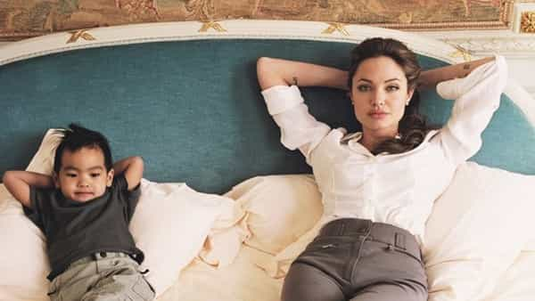
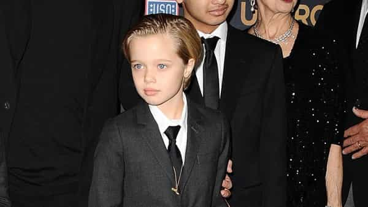
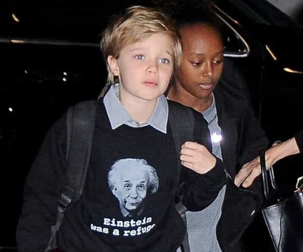
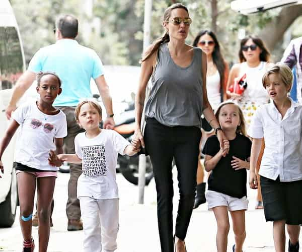

André is a young European who left his decaying country in 2012 for greener pastures. He enjoys exploring subterranean places, reading about a host of interconnected topics, and yearns for Tradition.


After 12 years of a highly advertised marriage, the Hollywood actors Angelina Jolie and Brad Pitt are divorcing. The news is all over the tabloids and the press people specialized in celebrities are feasting around the spectacle. Return Of Kings not being at the service of the vacuous characters who keep the entertainment show running, I won’t dwell much on what is already making the headlines, but would like to take the opportunity to focus on someone close from the case: Shiloh Jolie-Pitt, 10, whose appearances on the news reveal a rather disturbing relationship with her parents and especially her mother.
The first-born biological child of the Brangelina couple, Shiloh came after three adopted ones: Maddox, Pax Thien, and Zahara, the first two being Asian and the latter African. Like her parents, Shilol was light-skinned, and she showed a delicate blond complexion as well as blue eyes. A normal mother would have rejoiced to give birth to a child. But Jolie, quite jaded after her well-trumpeted adoptions, commented the matter differently:
It’s funny because [Shiloh’s] almost going to be the outcast in the family because she’s blonde and blue-eyed. I felt so much more for Madd, Zahara and Pax because they were survivors, they came through so much. Shiloh seemed so privileged from the moment she was born. I have less inclination to feel for her… I met my other kids when they were 6 months old, they came with a personality. A newborn really is this … Yes, a blob!
Aside from the fact that Jolie spoke about her adopted children as “coming with” personalities as if she was talking about dolls endowed with or without specific options, i.e. rather as objects than as human beings, notice the total absence of love and consideration she had for their own daughter.
Because of her physical type, Shiloh would be turned into the “outcast” of her family—if we can call this set of narcissistic champagne liberals and ego-gratificating children of various origins a “family” at all—and Jolie finds it “funny.” Does she feel any of the innate empathy a mother feels to her progeny? It seems not, and this mindset cuts at the root of the careful, nurturing nature academic leftists profess to deconstruct. Keep destroying nature indeed, keep destroying what you want to see as “social constructions,” you are destroying the very essence of meaningful and minimally satisfying relationships between related human beings.
Though likely having a high opinion of herself, Jolie won’t belove so easily what comes from her own womb. Her daughter seems “boring” to her, to the point of being akin to a “blob.” Here we see a bizarre, repulsive mix between the liberal redefinition of the family, where the traditional nuclear family cannot be recognized anymore, and a narcissistic, consumerist mindset straight from Hollywood: the adopted children are “cool” because they come with a seemingly supplement of soul, this being closely related to coming from an elsewhere deemed always cooler and better than regular European identity, and because they already have some exotic features Jolie can play the doll with, whereas Shiloh is all too familiar and bears the sins of the Leftist re-engineered White identity.

Is Shiloh “privileged” at all? If we only look at her parents’ wealth, of course she is. But if we look deeper than this particular factor, I wouldn’t describe her as such. Growing up as an “outcast” from one’s own family, torn apart by the massive presence of adopted children and by an utter carelessness and coldness from who should be the closest parent; getting despised and unloved by one’s own mother; that does not exactly sound like privilege. Rather, that is emotional abuse—or at least bemused neglect. And though the Jolie’s “blob” thing made the headlines of a scandal-hungry people press, I cannot remember any legal investigation on her rather strange relationship with her daughter.
Eventually, Shiloh grew up and, in 2008, four years only after she was born, Jolie complacently told the media the daughter “felt” to be a boy and wanted to be called John. In 2010, the same claims were repeated to Vanity Fair. In 2016, as Europe was (and still is) under invasion by a heavy tide of non-whites, the now 9 year-old girl was shown to the media sporting a pop pro-“refugee” t-shirt under the lenient eye of journalists celebrating how the child was as politically “involved” as her mother.


It is clear that both of these manifestations come from the parents. A child that age does not have neither the necessary maturity, nor the emotional autonomy from her parents to choose such things by herself, especially when said things are heavily promoted by the social milieu her parents belong to. (Slightly off-topic: it is bewildering to see that, after having promoted a blank slate view of children as to negate the relevance of genetics, leftists seem to have changed their stand and now believe that children can be autonomously “queer” or SJWs, regardless of their parents’ and of the mainstream discourse on the matter.)
In said case, Shiloh’s public endorsements are but a reflection of the champagne liberal fashions, and they were lavishly promoted by Jolie—where was Pitt?—exactly because of this. It seems like the daughter must endorse fashionable identities and live up to her mother’s whims as to have a place in the family.
Is Shiloh happy pretending to be a boy in a girl’s body? If she ended up rejecting that constrained, against-nature identity, would she still be loved or rather promoted at all by her mother? Beyond her androgynous clothes and haircut, notice her vibe: that of a sad child, who seems to live for the image she communicates rather than for her own sake. Engineered androgyny is definitely grim, no matter the billions of dollars wasted to craft the appearance of the opposite. As for the refugees thing, it seems like Shiloh never knew what a normal home is, just as many young Europeans did never know what a healthy, peaceful and homogeneous society was.
Indeed, the story of Shiloh, an unloved daughter who had to absorb a trans identity at four years old—do liberals have any respect at all for small infancy?—and get exposed daily to the media beast, let alone the more superficial Leftist causes Jolie bestowed on her later, is loaded with metapolitical significance. Without knowing it (yet?), this infant is a symbol, as well as her neglecting parents. Angelina Jolie, a baby-boomer of European descent busy jet-setting and appearing here and there in a never-ending trail of big bucks and narcissism, has a daughter she neglects and feels nothing for, precisely because said daughter is of her own blood.

Though Shiloh may live in a materially privileged environment, she seems to be mostly raised by a capricious mother who on her own avowals favours adopted children precisely because they are from The Big Elsewhere, barely has any dignity besides the ephemeral and artificial identities her mother wants her to carry with, lives in the eyes of predatory media without much intimacy, and may inherit nothing but a botched life of neglect and abuse and a world of disorder where wealth, moral dignity and public attention are misdirected on a bunch of adopted.
We should definitely investigate on how militant liberals, whether high-profile or not, raise their children: I am willing to bet we would find other examples of disastrous parentings hidden and partly caused by the Leftists’ belief about what they call “white privilege.”
Aside from liberal-led households, Shiloh’s case bears analogy with what a lot of millennials and so-called Z generation children have been going through. On the surface, she seems to come from a privileged upbringing, but beneath, things are sad and dark. How many young men have been silenced and shamed by pervasive leftist norms, despised by women, trained to be nice only to find this would lead them nowhere at all, deprived of a job thanks to offshoring and “affirmative action,” more or less forced to endorse leftist causes as to exist into the bourgeois bohemian city centers, and deprived of hope into the countries of their ancestors turning impersonal and discouraging?
Somehow, we are the progressives’ abandoned children, and Shiloh Jolie-Pitt’s story is a prime example of this phenomena.
To conclude on a positive note, I would like to highlight the fact that no one, even born with a vagina and from very wealthy parents, is sure to escape the left’s insidious violence. If Shiloh does not destroy herself through binge-drinking, drug abuse or risky behaviour, as star children often end up doing, she may find out she has no reason to keep living into a golden prison of false pretenses and emotional coldness. In other words, she might take the red pill, abandon her sham of a “family,” and become one of us.
Who knows if a red-pilled Z man won’t marry her and turn her into a beautiful housewife? If neomasculinity wins, and it sure can, there is hope. Per aspera ad astra.
Read Next: Feminist Politician Declares War On “Gendered Toys”; Dresses Up Daughter As Pink Fairy Princess